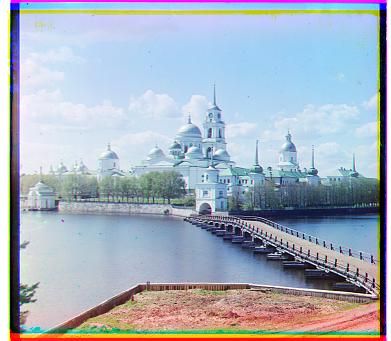
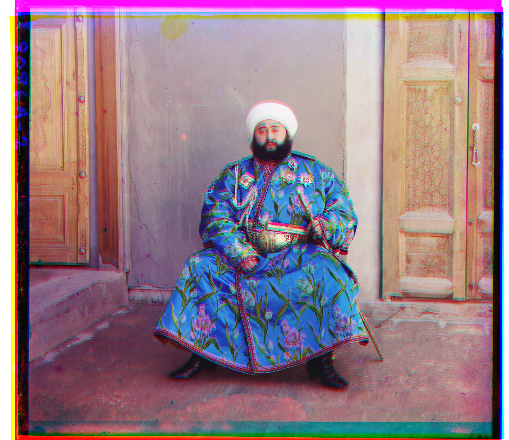
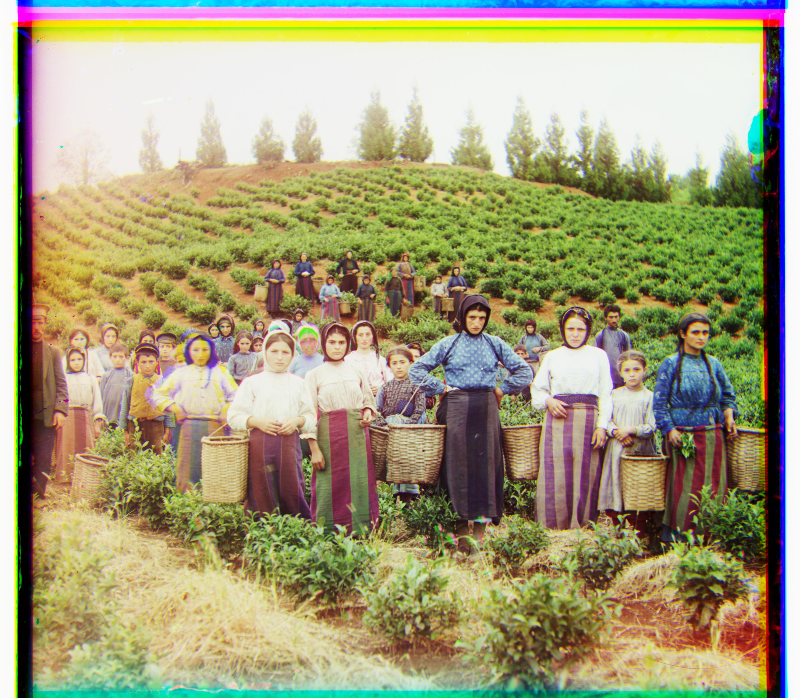
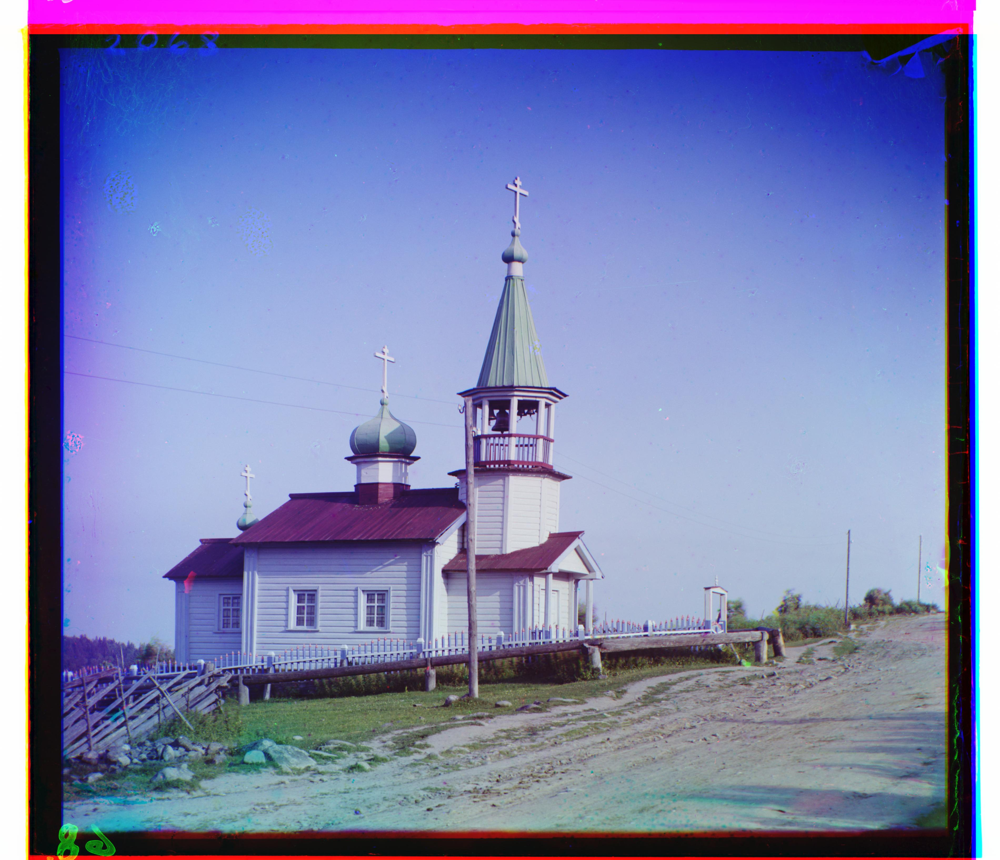
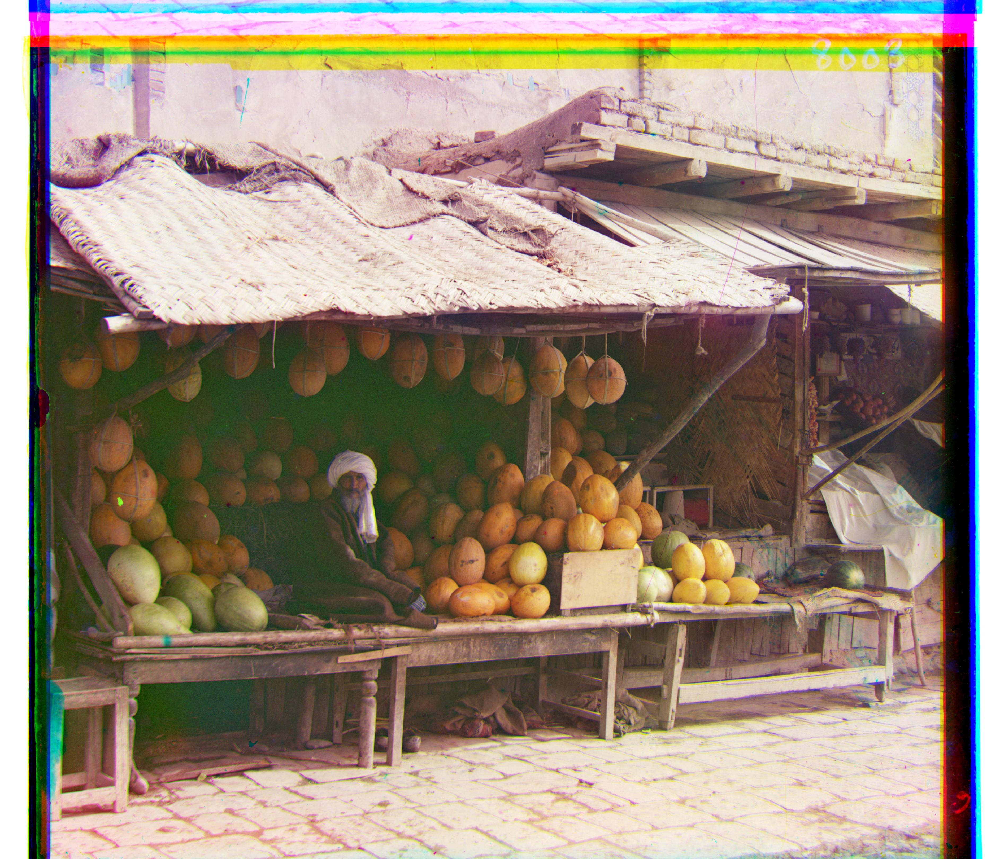
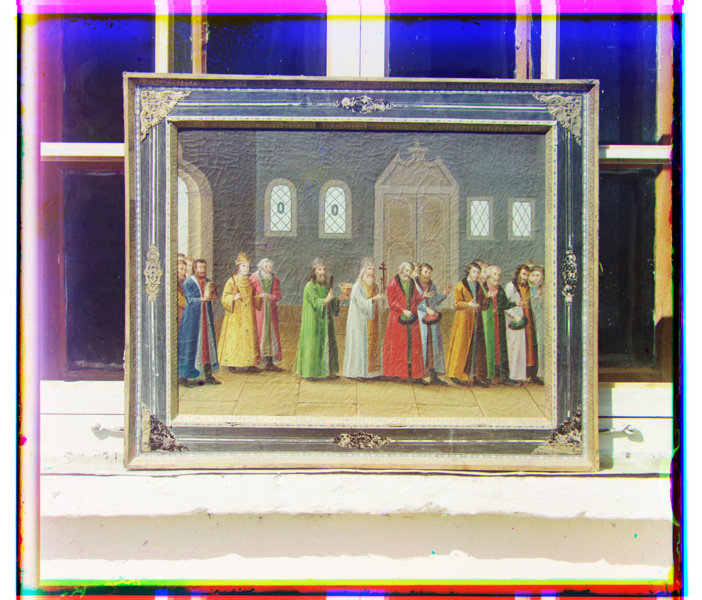
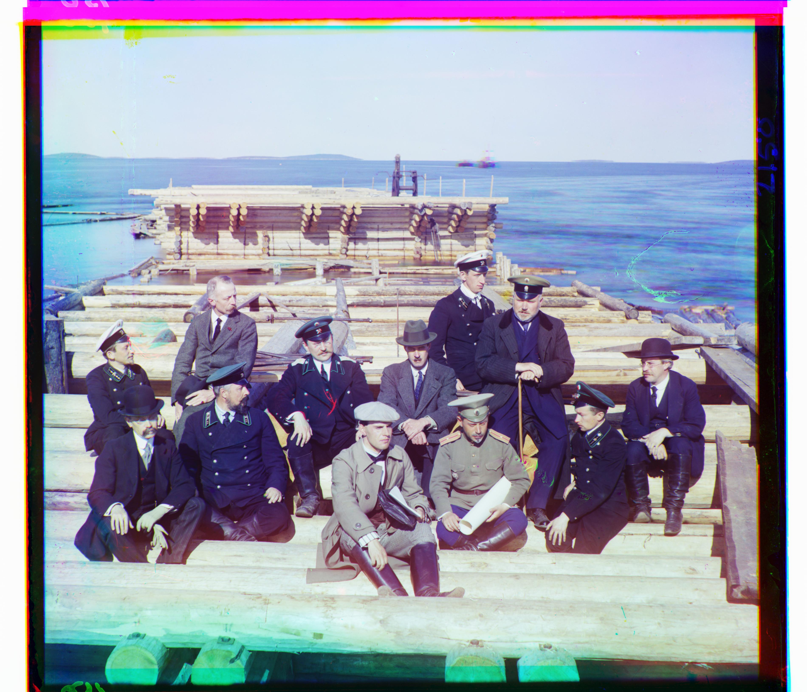
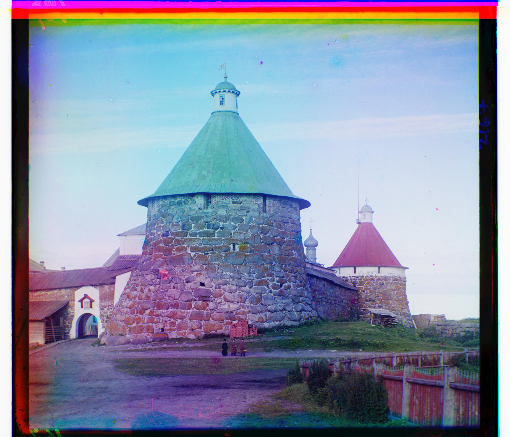
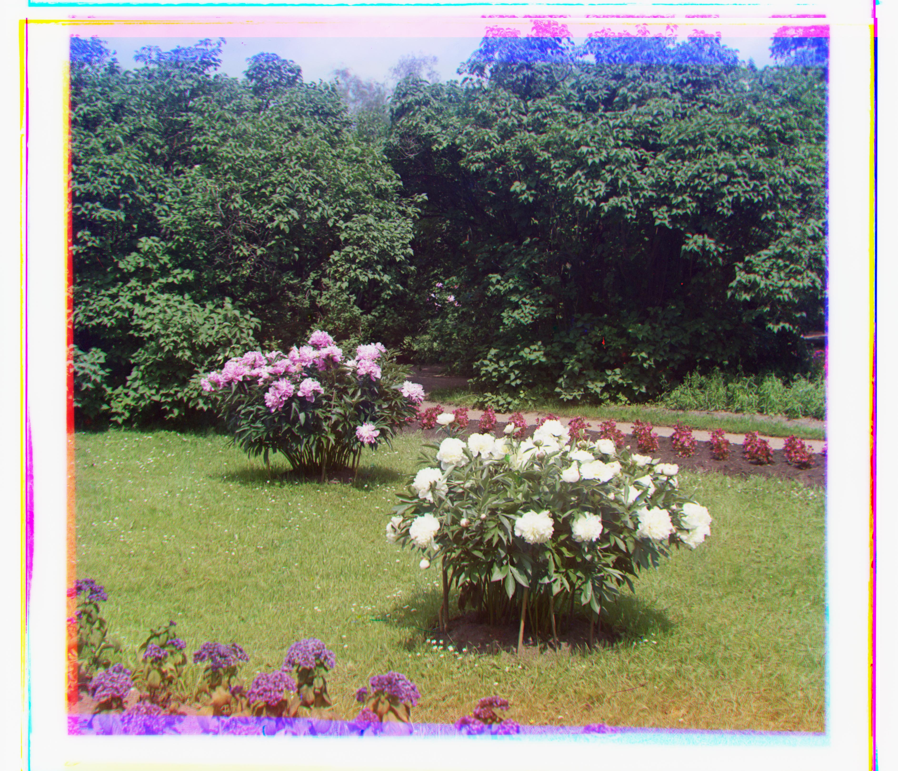

CS 180/280A - Introduction to Computer Vision and Computational Photography
This is my project portfolio.
Project 0: Becoming Friends with Your Camera
Part 1: Selfie: The Wrong Way vs. The Right Way

Wrong Way

Right Way
Part 2: Architectural Perspective Compression

Far + Zoom

Close
Part 3: The Dolly Zoom

My Nalgene, dolly zoomed
Project 1: Images of the Russian Empire: Colorizing the Prokudin-Gorskii photo collection
Overview
The Prokudin-Gorskii scans contained three grayscale exposures stacked vertically in BGR order. I split each scan into blue, green, and red channels, used blue as the fixed reference, and aligned green and red to it separately. Before alignment, I cropped 10% from each edge to reduce the effect of the glass-plate borders. After finding the best shifts, I applied them to the original uncropped channels and stacked the result in RGB order.
Normalized Cross-Correlation (NCC)
I used normalized cross-correlation (NCC) to score each candidate alignment. For the shifted channel and blue reference, I subtracted the mean from each comparison region and computed NCC = sum(A * B) / (||A|| ||B||). The shift with the highest NCC score was selected.
For each candidate, I shifted the moving channel with np.roll. I cropped the channels before alignment and excluded an additional margin when calculating NCC to reduce the effect of border and wrapped pixels on the score.
Single-Scale Alignment
For the smaller JPEG images, I used an exhaustive search over possible row and column displacements. Green and red were aligned independently to blue, and each candidate shift was evaluated using NCC. This same single-scale alignment procedure was also used at each level of the image pyramid. The shift with the highest score was then applied to the original channel. The offsets below are shown in (row, column) order.

Cathedral
Green offset: [x, y]
Red offset: [x, y]

Monastery
Green offset: [x, y]
Red offset: [x, y]

Tobolsk
Green offset: [x, y]
Red offset: [x, y]
Multi-Scale Pyramid Alignment
The TIFF images were much larger, so I used an image pyramid to make the alignment search more efficient. At each level, I blurred the channel with a 3 × 3 averaging filter and downsampled it by taking every other row and column. I continued until the image had been reduced to about 7% of its original size or another reduction would have made one dimension smaller than 64 pixels.
Alignment began at the smallest level with a search around (0, 0). The initial search radius was based on 10% of the smaller image dimension and limited to between 5 and 15 pixels. At each higher-resolution level, I doubled the previous shift to account for the change in scale and refined it within a 4-pixel search radius. I repeated this separately for green and red, then applied the final shifts to the original uncropped channels.

Church
Green offset: [x, y]
Red offset: [x, y]

Emir
Green offset: [x, y]
Red offset: [x, y]

Harvesters
Green offset: [x, y]
Red offset: [x, y]
Icon
Green offset: [x, y]
Red offset: [x, y]

Ilemtselga
Green offset: [x, y]
Red offset: [x, y]

Melons
Green offset: [x, y]
Red offset: [x, y]

Religious Painting
Green offset: [x, y]
Red offset: [x, y]

Self Portrait
Green offset: [x, y]
Red offset: [x, y]

Siren
Green offset: [x, y]
Red offset: [x, y]

Three Generations
Green offset: [x, y]
Red offset: [x, y]

Wharf
Green offset: [x, y]
Red offset: [x, y]
Alignment Failure
Emir was the least accurate result. The algorithm found a green shift of (49, 24) and a red shift of (86, 43), but some color fringing remained around high-contrast edges. A likely cause was that corresponding regions had noticeably different intensities across the color exposures. Mean subtraction and normalization helped account for overall brightness differences, but raw-pixel NCC could still struggle when corresponding pixels differed substantially between color channels.
Images of My Choosing
I also applied the same alignment procedure to three additional images from the Prokudin-Gorskii collection.

Railroad
Green offset: [x, y]
Red offset: [x, y]

Towers
Green offset: [x, y]
Red offset: [x, y]

Peonies
Green offset: [x, y]
Red offset: [x, y]